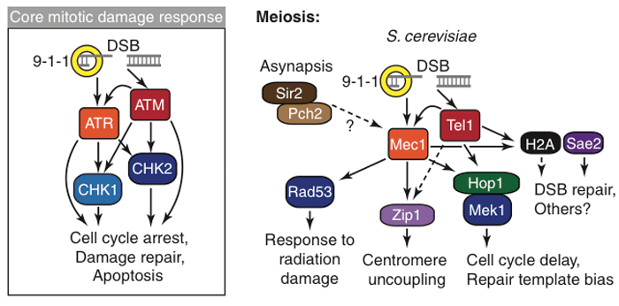

The generation of progeny is one of the defining features of life. In sexually reproducing organisms, a new generation is formed by the fusion of two germ cells, which are produced by the parents through a special cell division called meiosis. As a result of meiosis, germ cells contain exactly one half of the genetic material of the organism, the full amount of genetic material being restored during fertilization, when two germ cells fuse. A major event during meiosis is the reshuffling of the parental genomes during meiotic recombination. Meiotic recombination both produces genetically diverse germ cells, which is a major driving force of evolution, and ensures that the genetic material is properly assorted, such that all germ cells receive a complete set of chromosomes. Mistakes in meiotic recombination can lead to loss of genetic material, leading to loss of fertility and birth defects. We use the budding yeast, Saccharomyces cerevisiae (baker's yeast), as a model system to study the processes underlying meiosis and meiotic recombination. Our goal is to understand the mechanisms by which meiotic recombination is regulated to ensure faithful production of germ cells.
The initiating step of meiotic recombination is the introduction of about 160 DNA double strand breaks into the yeast genome. These lesions are not distributed randomly along chromosomes, but rather occur preferentially at so-called hotspots. A few years ago, we developed a rapid method to measure the genome-wide distribution of double strand breaks. We are now using this method to define the mechanisms governing break formation across the genome. In this context, we recently defined a mechanism that locally suppresses double strand breaks to protect the borders of the heterochromatic ribosomal DNA from meiotic instability. In addition, we also observed large chromosomal domains near the ends of all chromosomes that experience substantially increased break levels and we are currently dissecting the function of these extra breaks.
Double strand breaks are very dangerous lesions. If left unrepaired they can lead to the loss of large chromosome fragments as well as to severe chromosomal rearrangements. Such chromosomal instability is hallmark of many cancers. To protect the genome during meiosis, a surveillance mechanism called the recombination checkpoint ensures that all breaks are repaired before a cell starts the meiotic divisions. We have previously identified a mechanism involving the phosphatase PP1 and its regulatory factor Fpr3, both of which are important to maintain checkpoint activity if breaks persist. More recently, we analyzed another checkpoint phosphatase, PP4, and found that signaling from double strand breaks coordinates many processes in meiosis, including break repair and the pairing behavior of centromeres. We identified the mechanism of checkpoint-mediated pairing control and are now in the process of identifying the factors regulating double strand break repair.

It has long been thought that the presence of sister chromatids is a prerequisite for meiotic double strand break formation, but we were able to show that this is not the case. Rather cells can form breaks in the absence of a sister chromatid, but a regulatory mechanism termed the double strand break checkpoint appears to prevent break formation on chromosomes parts that have yet to be replicated. By contrast, sister chromatids do appear to be involved in the timely repair of double strand breaks. We are presently conducting experiments to more clearly define this later role of sister chromatids in meiotic recombination. We are also in the process of determining the mechanisms that underlie this newly identified double strand break checkpoint.
Both double strand break formation and checkpoint control rely strongly on the presence of specialized meiotic chromosome structures. In meiosis, chromosomes assemble into lamp-brush-like arrays of chromatin loops that are attached to a rigid protein axis. We are using whole-genome location analyses to determine how meiotic chromosomes are built and how these structures influence double strand break formation, repair, and checkpoint signaling.